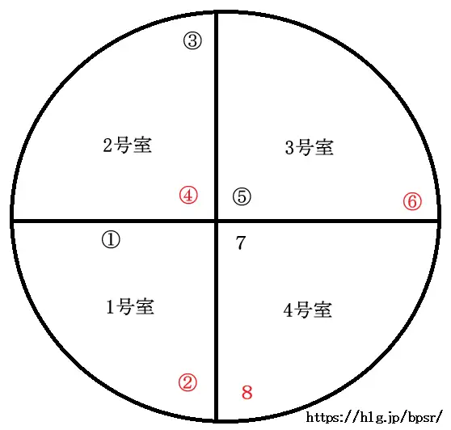
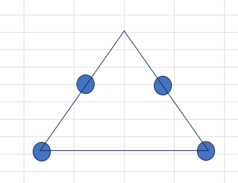

悖逆の機骸
ギルド「おふとん」用のレイドテンプレです。攻略中のメンバーが必要な情報をすぐ確認できることを重視した構成にしています。
時計回り移動
PIN配置
ギミック処理
ハード追加
テンプレ一覧
悖逆の機骸-始
エリア移動・頭割り・線AOE・距離減衰
エリア移動・頭割り・線AOE・距離減衰
悖逆の機骸-継
床破壊・広範囲AOE・ゴーレム処理
床破壊・広範囲AOE・ゴーレム処理
悖逆の機骸-終
今後追加予定
今後追加予定
使い方
上のメニューからレイドを選択してください。スマートフォンでも確認しやすいよう、項目をカード形式で整理しています。
悖逆の機骸-始
エリア移動頭割り線AOEハード追加距離減衰
エリア移動
- エリアは時計回りに移動
- Tさんは奇数PINの場所へボスを誘導
- 遠距離Dは偶数PINに集合
- 近接DとHはできるだけボスへ寄る
これにより、線ギミックの位置を9割固定できます。

エリア移動タイミング
1004PT が隣へ移動
1053PT が隣へ移動
1102PT が隣へ移動
1151PT が隣へ移動
壁を越えると全体ダメージ＋デバフ付与雑魚出現。一斉に渡らず、分かれて移動します。
- 移動後に沸く雑魚は集敵 → 処理
頭割り
- 回復阻害あり
- 重ねずに処理
- 3～4人ずつに分かれて受ける
線AOE
- 線が付いた3人は、紫オーブの上にAOEが重なるように立つ
- 線AOEが来たらオーブから離れる

ハード以降：オーブ4つ
台形に配置される球を三角形のAOEに収められるように注意。
本体＋分身｜距離減衰
1回目
ボスから離れる
ボスから離れる
2回目
分身から離れる
分身から離れる
時間差で2回来ます。
悖逆の機骸-継
床破壊ハード追加広範囲AOEゴーレム

床破壊攻撃
- 1 → 2 → 3 PINの順番でまとめて処理
- 基本は対象者が指定された床を使って処理
- 【非推奨】処理に余裕がある人は、デカAOEの処理タイミングでジャンプして一度外へ出て戻ることで、余分な床を壊さずに処理可能
ハード以上
2番目の対象者は猶予時間が短い。間に合わない場合は中央3PINの床を使ってOK。
2番目の対象者は猶予時間が短い。間に合わない場合は中央3PINの床を使ってOK。
ハード追加ギミック：広範囲AOE
- 2名指定
- それぞれ角で処理
ゴーレム処理
- T1：6 PINで待機
- T2：2 PIN側で待機
- DH：6 PIN集合
6PINゴーレムを先落とし、その後通常処理へ。
悖逆の機骸-終
今後追加予定
攻略情報が追加されたら、このページに追記できます。
攻略情報が追加されたら、このページに追記できます。